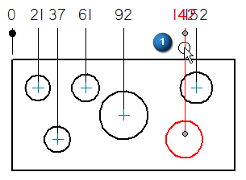
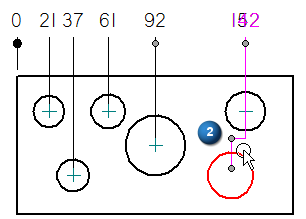
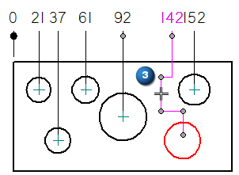
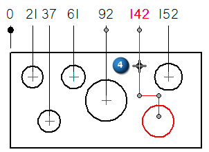

Adding and removing jogs on coordinate dimensions
You can add jogs to coordinate dimensions automatically, as you place them. You also can add jogs to existing coordinate dimensions to improve their appearance.
Placing coordinate dimensions with jogs
Jogs are added automatically where they are needed when you use the Automatic Coordinate Dimension command.
When placing dimensions manually using the Coordinate Dimension command, you can select the Enable automatic jogging option on the Lines and Coordinate tab to create jogs and to space the lines and text as each dimension is placed.
Inserting jogs into projection lines
You can insert one or more jogs manually into existing dimension projection lines to improve their formatting. Use the Select command to select the dimension (1), and then hold the Alt key as you click to add the jogs to the projection line (2).


Modifying jogged coordinate dimensions
You can reposition a jog by dragging the jog segment (3).

You also can modify the shape of a projection line by dragging a vertex handle (4).

You can drag a jogged projection line to reposition the dimension. Adjacent dimensions are adjusted to make room for it, and jogs are added as needed to prevent overlap.
Removing jogs from coordinate dimensions
In the Draft environment, you can:
-
Remove all of the jogs from a coordinate dimension by first selecting the dimension and then selecting the Jog button on the Dimension command bar.
-
Remove a single jog from a coordinate dimension by selecting the dimension, and then using Alt+click on the vertex you want to remove.
For more information, see Add and remove jogs on a dimension.
How do I
Place coordinate dimensions automaticallyPlace a coordinate dimension
Place a coordinate dimension using a coordinate system
Place an angular coordinate dimension
Place coordinate dimensions between drawing views
Change the origin dimension in a coordinate dimension group
Change the coordinate origin value
Learn more
Ordinate dimensionsCoordinate dimension alignment sets
Look up more details
Dimension command barCoordinate dimension handles
Automatic Coordinate Dimension command
Automatic Coordinate Dimension command bar
Keypoint Options dialog box
Coordinate Dimension command
Angular Coordinate Dimension command
Change Coordinate Origin command
Lines and Coordinate tab (Dimension Style and Dimension Properties)